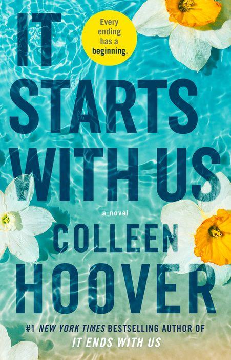
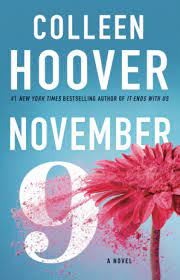

IT ENDS WITH US

Review: It Ends With Us is a book that has soared in the popularity stakes thanks to TikTok and Instagram. Full of emotion, heartache, pain and realisation, It Ends With Us is a considerate read from Colleen Hoover. A story of love, heartache, betrayal and personal decisions, It Ends With Us follows a young woman named Lily. When Lily meets Ryle, a successful surgeon, she thinks that her dreams have come true. In a life far away from her small-town upbringing, Lily knows the tides have changed in her favour. However, Lily soon discovers that Ryle isn’t the perfect man. Despite the fact that Ryle is charming and clever, he has a difficult time with relationships. This unsettles Lily and she find that her thoughts are occupied by her old love, Atlas. When Lily gets the chance to reconnect with Atlas, her new life with Ryle is under threat. What life will Lily choose? A salient personal dedication from the author soon gives the reader a clue as to what they expect to encounter when they open It Ends With Us. A book that will leave you quite raw, exposed, conflicted and teary, It Ends With Us is a hard-hitting modern romance title.
Read MoreIT STARTS WITH US

The author ended the first book with Lily and her newborn and now,
six years after that, there is finally some conclusion for fans with
the sequel It Starts With Us.
Circumstances led Atlas and Lily to part ways as a child but Lily never
let Atlas slip away from her heart. Even after she found love in Ryle,
her time with Atlas always foreshadowed her new relationship.
Ryle has had a temper for a while, one that is often directed at Lily.
Due to the domestic abuse Lily had witnessed her father execute on her
mother as a child, an older and wiser Lily decides to divorce her abusive
husband Ryle for the sake of her daughter Emerson. Now almost a year after
Lily’s split with Ryle, she runs into her first and possibly only love, Atlas.
It Starts With Us, in its 37 chapters, tells the story of Lily and Atlas
and how fate and circumstances eventually worked in their favour and brought
these two lovers together again. The novel was released on October 18th and just
as any other devout CoHort would, I stayed up all night to read the novel in
its entirety – and what a journey that was!
NOVEMBER 9
Now technically I had some issues with this book but I am not going to dwell on that aspect like how he was in her booth and her fake boyfriend, or how he was with his dead brother’s ex-wife months later or how their insta love was not so believable I’ll stop here now. These were there but really I just loved the story and I am a sucker for a good romance plus plot twist so that did it for me. I loved them meeting up each year and also how they fought and aimed to meet up in those years. I loved catching up with them yearly to see what they had been up to. There were also the hard years the year Ben moved on and the year Fallon didn’t Show up. One thing to note is that I knew nothing about the characters or that Fallon would be scarred from a fire accident. Collen tried in her presentation but not enough, and I hold no writer responsible for educating and uplifting of burn victims but I wish she had done more for Fallon’s confidence. Even after almost 7 years, she was still struggling with it and there was no improvement or growth. In the 5 year period, Fallon is the same girl we met in page one I didn’t like that very much.
Read More